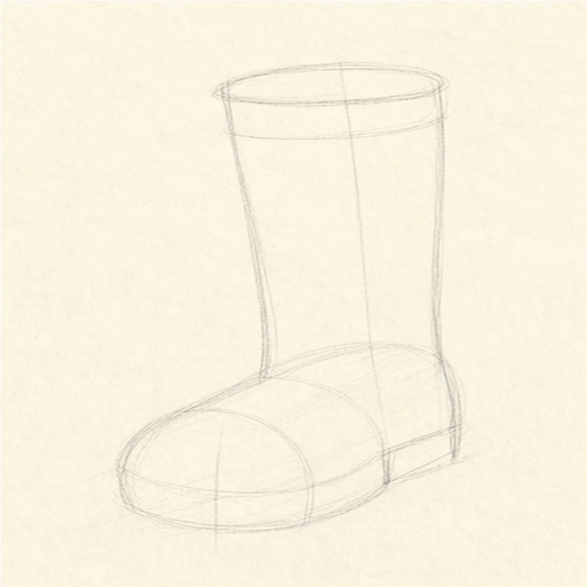
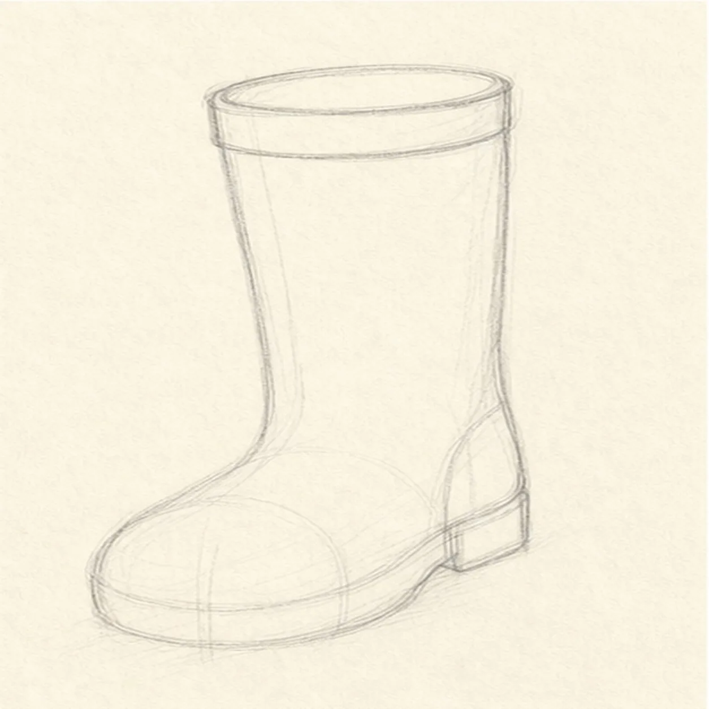
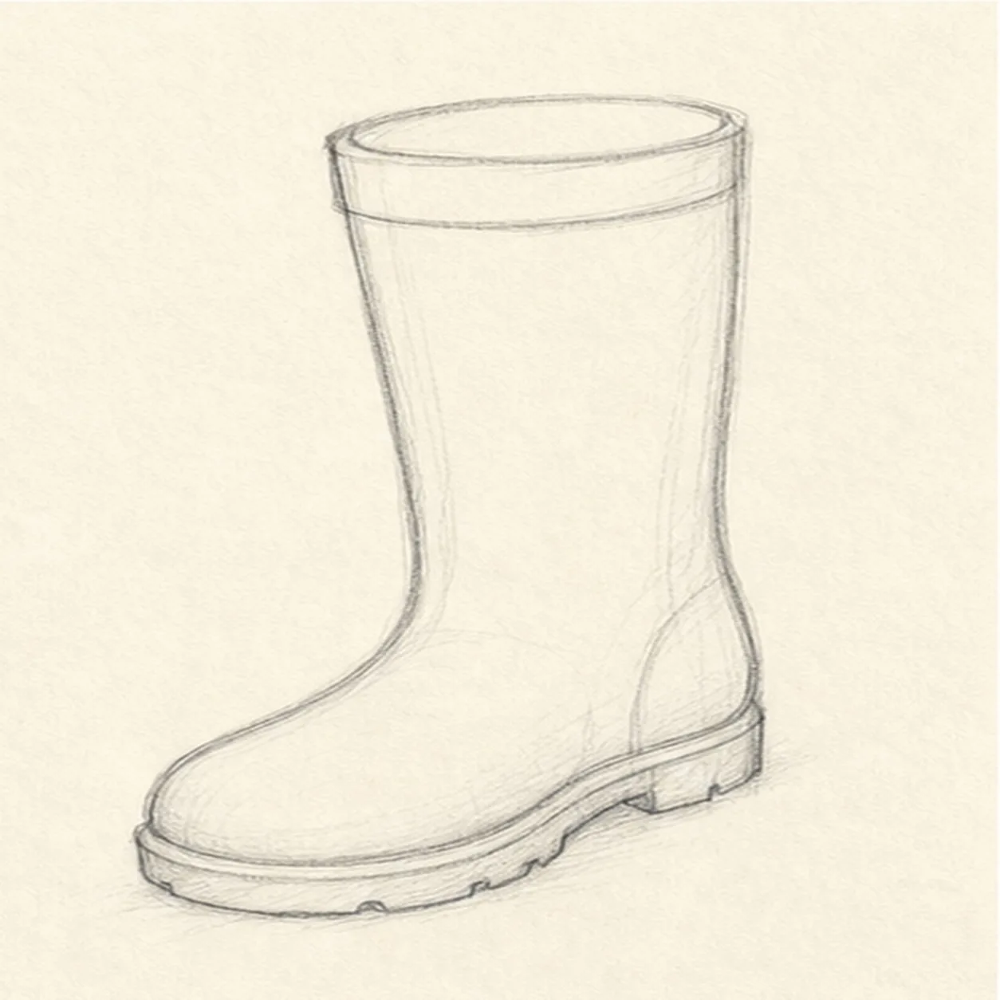
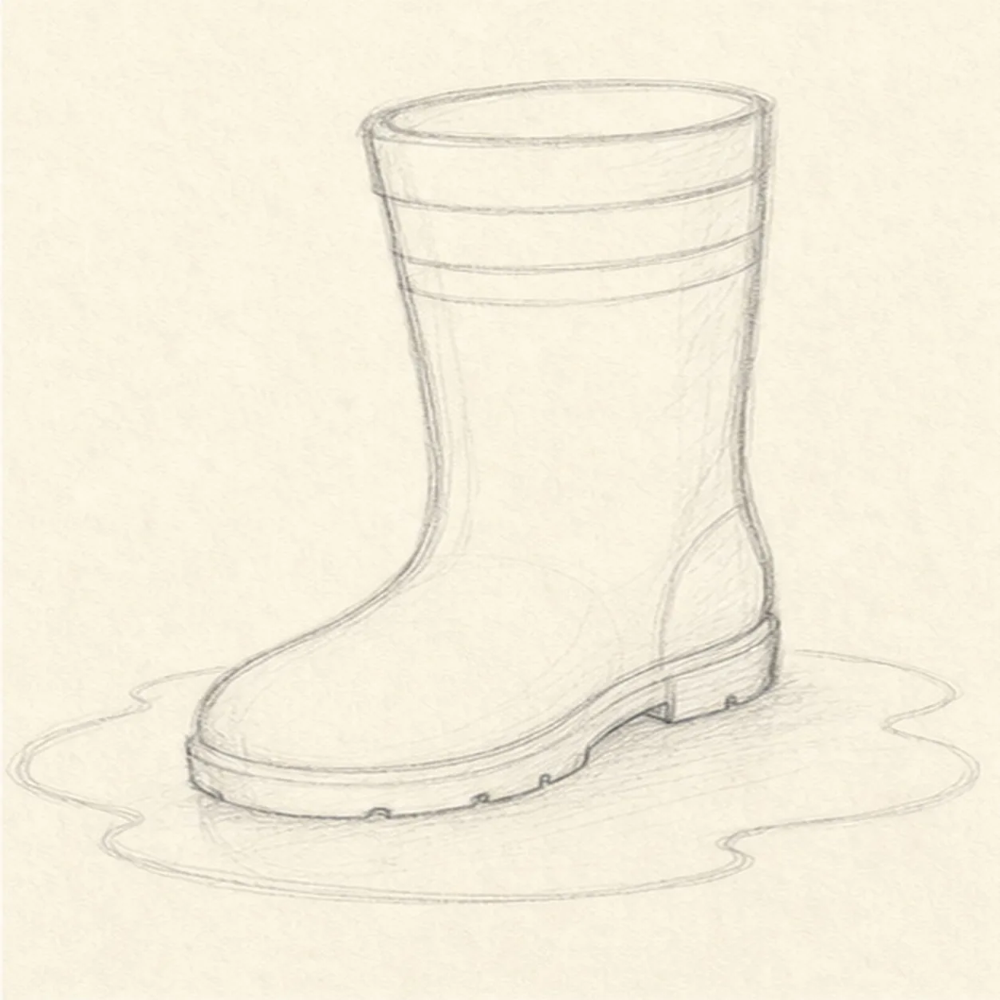
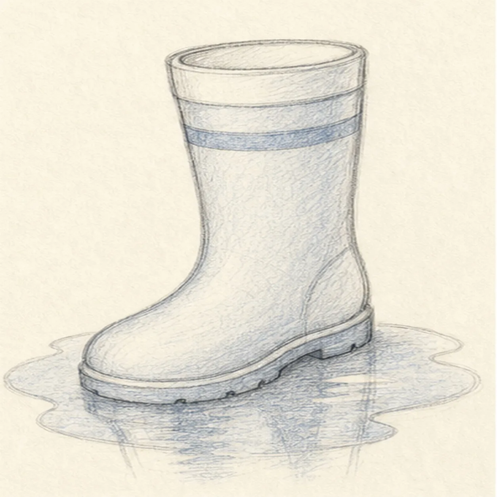

From the archive
Let's draw a rain boot with a puddle
Treat this as one small practice round: build the subject lightly, notice the shapes, then darken only the lines that help the finished sketch.
-
01

Block in the boot
Draw a tall rounded shaft, then attach a rounded foot shape that points gently to one side.
Sketch tip: Use light lines here. The boot should feel sturdy, but the first shapes can stay loose.
-
02

Curve the cuff and heel
Add an oval top opening, a curved cuff band, and a small heel shape at the back of the foot.
Sketch tip: The top oval shows that the boot has thickness. Keep it tucked inside the shaft edges.
-
03

Shape the sole
Refine the rounded toe and draw a thicker sole along the bottom of the foot.
Sketch tip: A rain boot needs a chunky base. Make the sole a little heavier than the shaft lines.
-
04

Add stripe and puddle
Place a simple stripe band around the shaft, then draw a shallow puddle oval spreading under the boot.
Sketch tip: Let the puddle sit wider than the sole so the boot feels planted in wet ground.
-
05

Shade the wet edges
Add a few reflection marks in the puddle and shade the boot lightly with blue-gray pencil.
Sketch tip: Keep the reflection broken into short strokes. A puddle looks more believable when it is not one flat mirror.
-
06
Finish the rainy sketch
Darken the keeper contours, clarify the stripe and sole, and deepen the boot and puddle shading already on the page.
Sketch tip: Do not add new decorations at the end. This final pass should make the simple boot cleaner and wetter.